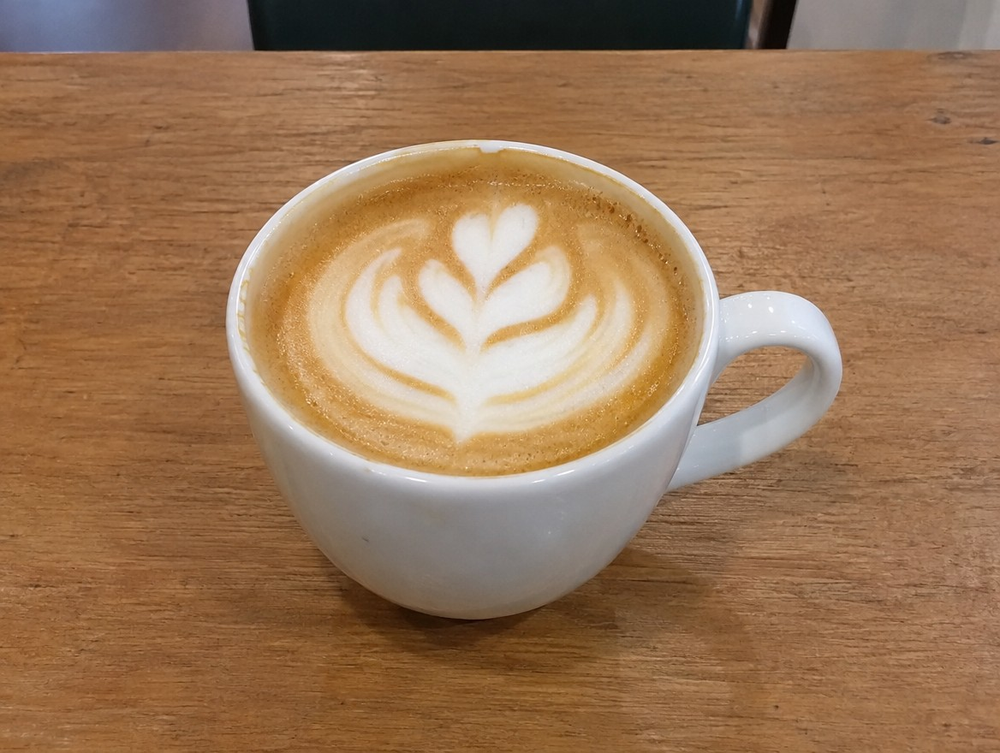
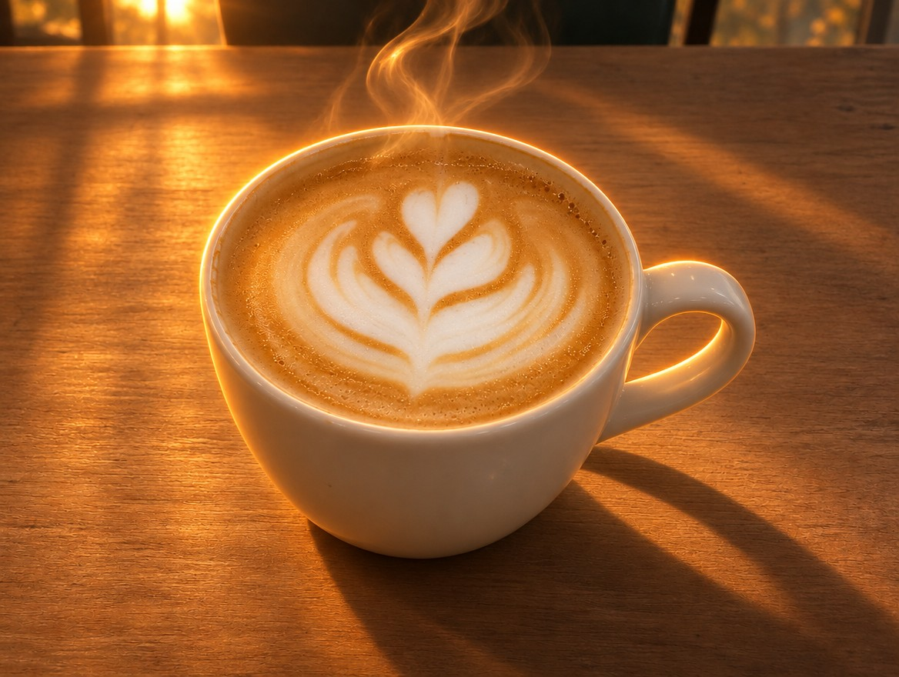
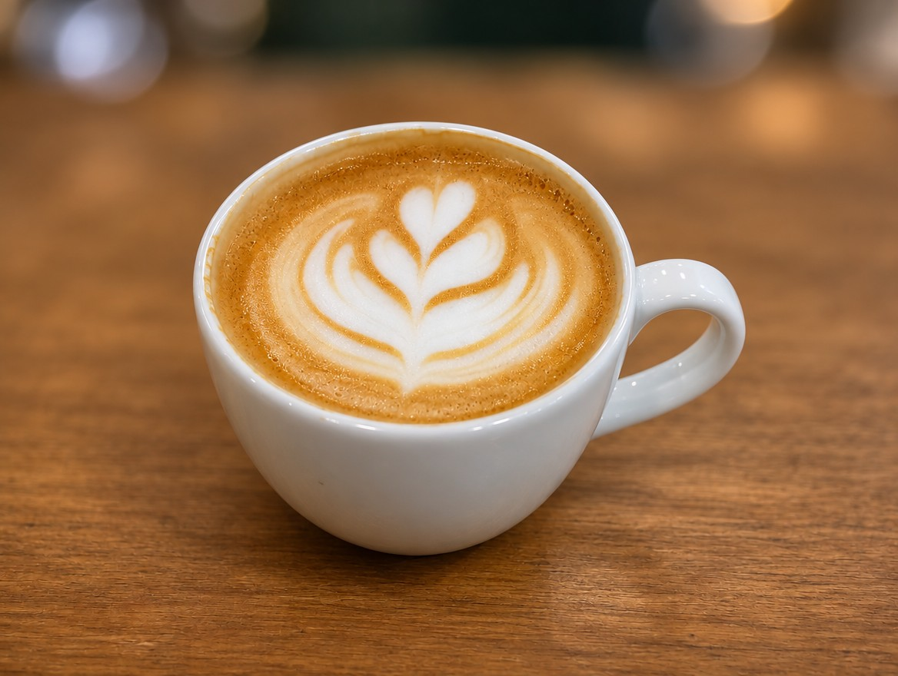
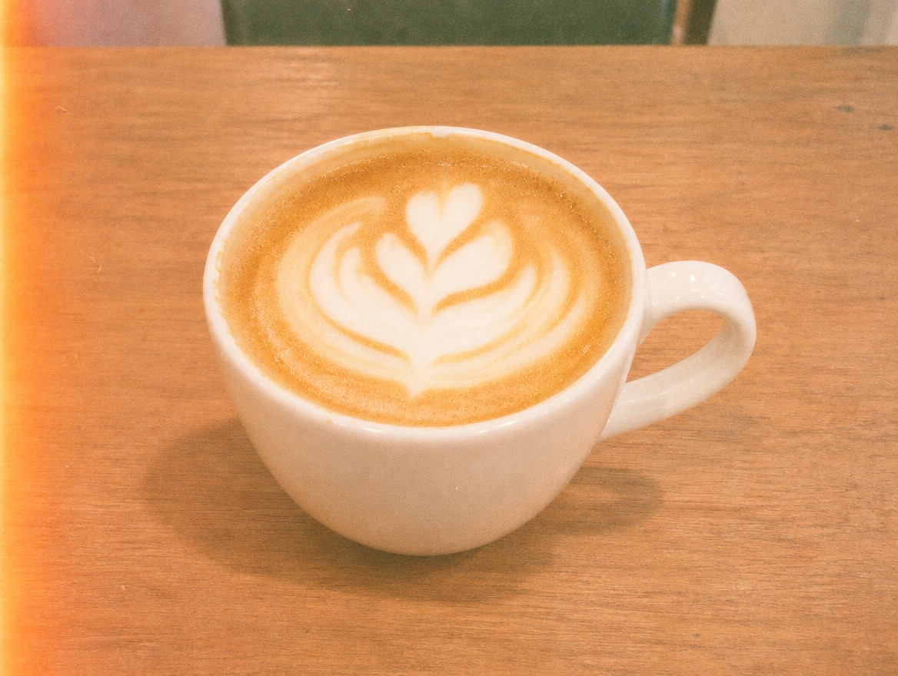
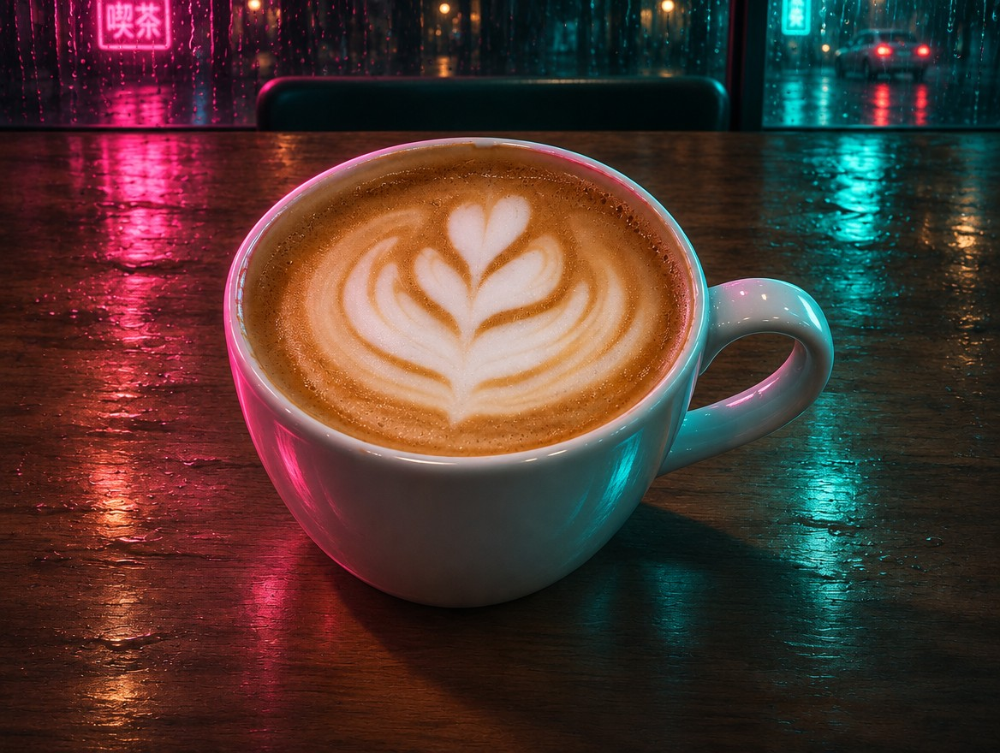

AI 문방구 · 키워드 5
단어 하나로 달라지는
이미지 AI 키워드 5
댓글로 신청해주셔서 고마워요. 영상에 나온 사진은 전부 힉스필드(GPT Image 2.6)로 같은 커피잔 사진에 키워드만 붙여 다시 만든 결과예요. 피사체 문장 뒤에 키워드 문장을 붙이면 돼요.
BASE기준 사진 (전)

a white ceramic coffee cup with latte on a plain wooden cafe table, simple straight-on smartphone photo, flat indoor lighting
01golden hour backlight
해 질 녘 역광
빛이 뒤에서 들어와 컵 테두리와 김이 빛나요. 음식·음료 사진에 제일 무난하게 먹혀요.
전

후golden hour backlight, warm low sun from behind, glowing rim light, long soft shadows
0285mm, shallow depth of field
배경 흐림
배경이 녹아내리고 주인공만 또렷해져요. 제품 하나를 강조할 때 써요.
전

후shot on 85mm lens, shallow depth of field f/1.8, creamy bokeh background
03top-down flat lay
위에서 내려다보기
소품까지 정리된 잡지 컷이 돼요. 메뉴판·인스타 피드용으로 좋아요.
전
후
top-down flat lay, shot from directly above, neatly arranged props, editorial magazine styling
04shot on Kodak Portra 400
필름 색감
필름 입자와 바랜 색이 생겨요. 감성 카페·브이로그 썸네일에 잘 맞아요.
전

후shot on Kodak Portra 400 35mm film, visible film grain, warm faded tones, soft light leak
05cinematic neon night
영화 같은 밤
분홍·청록 네온과 비 반사로 분위기가 확 바뀌어요. 바·야간 매장 홍보에 써요.
전

후cinematic neon night, pink and teal neon light, rain reflections, moody film still
MIX섞어 쓰는 법
빛 하나 + 카메라 하나
빛(golden hour, neon)과 카메라(85mm, flat lay, film)는 서로 다른 부분을 바꿔서 같이 써도 안 부딪혀요. 빛끼리, 카메라끼리 둘을 섞으면 하나가 묻혀요.
[피사체], golden hour backlight, shot on 85mm lens, shallow depth of field
[피사체], top-down flat lay, shot on Kodak Portra 400 film, visible grain
내 사진에 입히기
힉스필드·챗GPT에 내 사진을 올리고 "같은 구도 그대로, 아래 느낌만 바꿔줘" 뒤에 키워드를 붙이면 영상처럼 전후가 나와요.
같은 피사체와 구도는 그대로 두고 이 느낌만 바꿔줘: golden hour backlight, warm low sun from behind